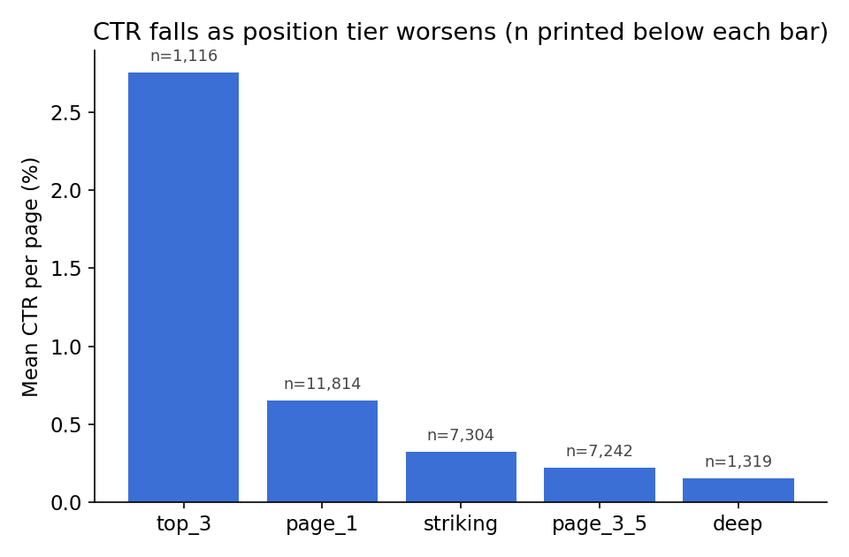
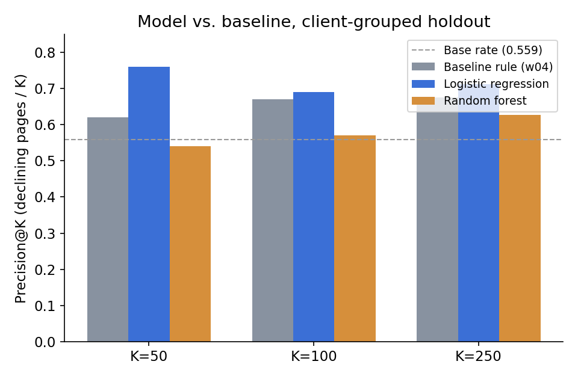
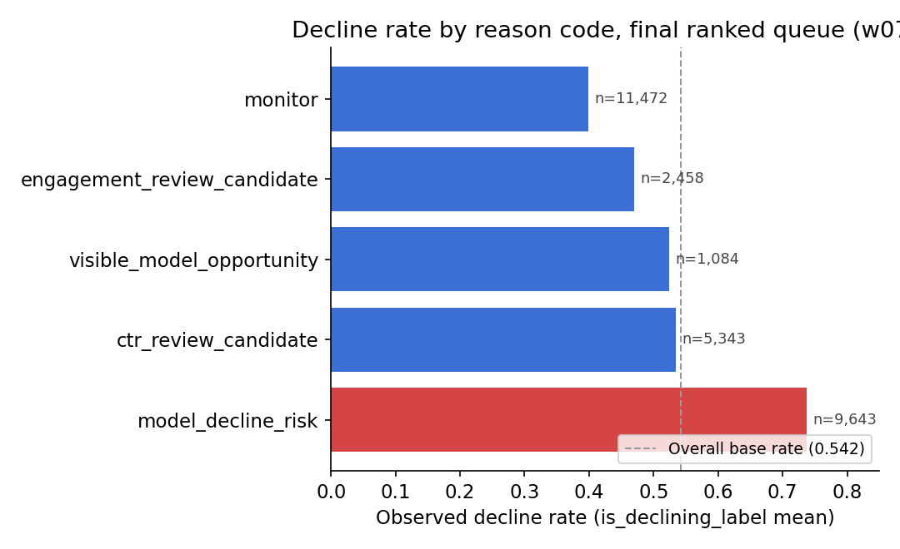

Question: given a page's trailing-90-day search history, which pages should a content editor refresh first — and does a learned model beat a transparent, hand-written rule at answering that? Data: FlyRank's 30,000-row Search Intelligence starter release, 32 pseudonymized clients. Method: a rule-based baseline (visibility × CTR gap) compared against logistic regression and random forest, under a client-grouped split designed to catch memorization. Result: logistic regression beats the baseline rule at every K tested (precision@50: 0.76 vs 0.62), but the gap is modest, and a naive random split would have reported an optimistic AUC of 0.694 against the honest 0.604 — a 0.09-point illusion from letting the model see a client's other pages during training. What it's for: a ranked, reason-coded weekly refresh queue for a content editor — decision support, never causal proof, and never an automated edit.
Introduction
A content editor at a growing site has, at best, a few hours a week and a few hundred candidate pages. Right now that choice is a gut-feel sort. This project asks whether a transparent rule, or a small learned model, can do meaningfully better — and whether the answer changes once the evaluation is held to an honest standard.
The decision this work supports is narrow on purpose: which handful of pages does an editor open first this week, and why. Every recommendation below ships with a reason code a human can check before acting, because a ranked list nobody trusts is worse than no list at all.
Data
data/raw/content_refresh_anonymized.csv — 30,000 rows, one per pseudonymized
content item, 32 pseudonymized clients, every metric aggregated over a trailing 90-day window
ending at export time.
The full release is a ~79M-row warehouse hosted on Hugging Face behind a gated, token-based flow built for interactive notebook sessions. The environment this capstone was finished in couldn't reach that host or hold a live token, so every number below comes from the public starter slice — stated once here, and true of every table and chart that follows.
Excluded, and why
trend_direction,trend_pct— these define the label used throughout this paper. Using them as model inputs would be reading the answer key, confirmed directly below.client_id,content_id— pseudonyms, used only to build the client-grouped split, never as model inputs.- FlyRank's own product decision flags (a composite health score, a priority score, an action type) — not shipped in this dataset at all, so nothing here can accidentally learn to copy an existing system's answer instead of finding its own signal.
- Every row already has
impressions_90d > 0andcontent_age_days ≥ 90— brand-new and zero-visibility pages sit outside this study's scope entirely.
No client names, domains, real URLs, private queries, or credentials appear anywhere in this repo or this page.
Methodology
Label
The target, is_declining_label, is trend_direction == "down" — a
proxy label computed from a 30-day-vs-prior-30-day snapshot comparison, not an observed
future outcome. Every claim built on it below uses observed / directional / decision-support
language, never causal language.
Baseline: a rule a human can read
Two signal checks came first, each on its own bucket table with n printed:
| Signal | Claim tested | Verdict |
|---|---|---|
| Staleness (behind FlyRank's refresh flags) | Longer since last update → more likely declining | MIXED |
| CTR vs. position (behind the CTR-fix logic) | CTR drops as position worsens | CONFIRMED |
Staleness reversed at the exact 181+ day bucket the refresh flag targets (decline rate 47.1%, n=174 — below the 54.2% overall base rate), so the baseline demotes it to a tie-breaker rather than a gate. CTR fell monotonically from 2.76% (top-3 positions) to 0.15% (deep positions) across every bucket (n=1,116 to 11,814), so the rule leans on it directly:

eligible = impressions_90d >= 500 AND 0 < avg_position <= 20 ctr_gap = eligible AND ctr < 0.5 severity = max(0, 0.5 - ctr) baseline_action_score = log1p(impressions_90d) * severity
Model
Logistic Regression, then Random Forest — the toolkit's own recommendation for a "yes/no with an observed label" question, readable first, stronger only if it earns the complexity. 18 numeric features (impressions, clicks, sessions, CTR, position, engagement rate, scroll rate, content age, freshness, word/char count, search volume, competition, CPC, AI traffic — plus five missingness flags) and 8 categorical features (content type, intent, competition level, and four transparent tiers). None label-derived, none a product flag.
Validation design
Split by client_id, not randomly: content items from the same client share hidden character (the same team, the same site authority) that a random split lets the model memorize instead of learning something that transfers. The gap this choice makes is itself the headline validation finding, reported in Results.
Leakage checks
The full attack checklist ran clean — label-derived columns excluded and confirmed absent,
no product flags exist in this dataset to accidentally include, population selection carries no
outcome-window information, split grouped by the repeating entity, base rate printed next to
every metric. The confession test: deliberately adding trend_pct back as a feature
pushes AUC from 0.604 to 0.998 — proof the test harness is actually sensitive to leakage,
and proof of exactly why that column stays out everywhere else in this project.
Results
Same client-grouped holdout rows, same precision@K metric, for the baseline rule and both models — the comparison the training-honest-models skill calls non-negotiable.

| K | Baseline rule | Logistic regression | Random forest |
|---|---|---|---|
| 50 | 0.620 | 0.760 | 0.540 |
| 100 | 0.670 | 0.690 | 0.570 |
| 250 | 0.676 | 0.712 | 0.628 |
THE VALIDATION FINDING THAT MATTERED MOST
A naive random split reported AUC 0.694 for the same model on the same data. The honest, client-grouped split reports AUC 0.604 — a real 0.09-point gap that is memorization, not skill: a random split lets rows from the same client land on both sides of train and test, so the model partly learns "this client's pages behave like X" instead of a pattern that transfers to a client it has never seen. 0.604 is the number used everywhere else in this paper.
Limitations & honest framing
- Proxy label, not a future outcome.
is_declining_labelis a current-window snapshot classification, not "this page will decline next month." A stronger version of this project — predicting a genuinely future window — is future work. - Cross-sectional, non-experimental data. No A/B test, no control group. Nothing here can claim refreshing a page causes recovery — only that certain pages are, in this slice, more often labeled declining.
- One 30,000-row slice of a ~79M-row warehouse. Every number is "observed in this slice," never "true of FlyRank clients in general."
- Client-grouped evaluation isn't a guarantee on a genuinely new client — it only proves the model isn't purely memorizing the 22 clients it trained on. Applying it to an unseen client without re-validation would be trusting an unvalidated number.
- The label is noisy at the row level. Individual wrong cases (Section 4 of the modeling notebook) show plausible model reasoning disagreeing with a 30-day snapshot label — a property of the label's short window, not necessarily a model failure.
- No claim about Google's ranking algorithm. Only search-console-style outcomes are observed here — never the mechanism that produces them.
Ranked recommendations
The final queue blends the model with the transparent baseline —
100 × (0.70 × model_probability + 0.30 × normalized_baseline_score) — so the
ranking leans on the model's lift while staying anchored to a rule an editor can still read.

model_decline_risk
carries the clearest lift (73.7% vs. a 54.2% base rate).| Reason code | Action | Decline rate | n |
|---|---|---|---|
model_decline_risk | Priority refresh | 73.7% | 9,643 |
ctr_review_candidate | Review CTR & meta | 53.4% | 5,343 |
visible_model_opportunity | Light-touch review | 52.4% | 1,084 |
engagement_review_candidate | Review content depth | 47.0% | 2,458 |
| none fired | Monitor | 39.9% | 11,472 |
Intended use, and where it stops being valid
A weekly triage aid for a content editor on a client already represented in this training portfolio — never an automated edit, never a causal promise, and never trusted at face value on a brand-new client without re-validating the grouped-holdout numbers first.
What a human must check before acting
- Whether a near-zero CTR on high impressions is a real content problem or a tracking artifact — both are equally consistent with the data.
- Whether several top-ranked pages from the same client point to a client-level issue rather than independent content problems.
- Whether the page's intent (e.g. branded/navigational) makes "low CTR" mean something other than a weak snippet.
Reproducibility
Every table and chart on this page comes from a notebook in this repo, executed top to
bottom, with fixed random seeds (random_state=42 throughout).
Acknowledgments & data credit
Built on the FlyRank ML Internship dataset. Data and program credit: flyrank.ai.